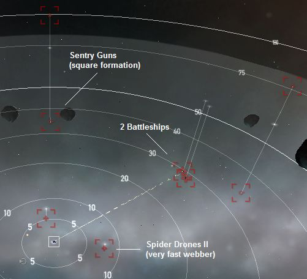

Duo of Death, Level 4
Faction: Sansha
Mission type: Encounter
Space type: Deadspace
Damage dealt: EM, Therm
Web/Scramble: Spider Drones (web only)
Extras: NA
Recommended damage dealing: EM (best), Therm (secondary)
Recommended ship classes: Battleship, Command Ship, HAC, Strategic Cruiser
Note: This mission can take longer than usual as you may need to travel 50-60km to retrieve the dropped Special Delivery box mission objective.
Fitting an afterburner into a slow battleship is highly recommended.
Single Pocket:
Auto-aggro from Single Group at warp-in.

Single Group (Auto-Aggro): (50-75km)
2x Spider Drones II4x Sansha's Sentry Gun (Tower Sentry III)
2x Battleships (Centus Tyrant)
Tip
- Mission is flagged completed after you have killed both battleships.
- Don't forget to loot the dropped container for the Special Delivery box mission objective.
Blitz:
- Warp in, kill both battleships, loot the can, and warp out
- You might have to kill the spider drones in order to move
- If you're webbed (too lazy to shoot Spider Drones/drive a slow Battleship) drop Mobile Tractor Unit and wait for it to pull containers, loot, scoop and warp out.
Structures
- Breeding Facility drops random NPC trade goods / passengers
Asteroids
- 7 Omber 'roids of 25,000 units each, for a total of 175,000 units.
- 6 Veldspar 'roids of 90,000 units each, for a total of 540,000 units.
- 6 Scordite 'roids of 50,000 units each, for a total of 300,000 units.
But they are all too scattered around, being very difficult to mine two at the same time.
Bounty
2,717,500.00CategoryMissions
CategoryLevel4
VIDEO TUTORIAL
http://www.youtube.com/watch?v=hx1AKeLCrn0
7x Omber (25k)
7x Scordite (50k)
7x Veldspar (90k)
Never Got Below 65% Shields
7: Arbalest Heavy Missile Launchers: (ThunderBolt Heavy Missiles)
2: Large Shield Extender II
4: Shield Power Relay II
1: Magnetic Scattering Amplifier II
1: Photon Scattering Field I
1: Heat Dissipation Field I
1: Heat Dissipation Field Amplifier II
5: Hobgoblins
For Some Extra Dps Add
1: Ballistic Control System II
And Take Out The Shield Power Relay II
Shield % Will Drop To 49% To 53%
But Still Able To Tank It
Seems the Ishtar is not the most popular L IV ship but I know I use it for almost every mission I do including this one and it works fine.
Dual-armor rep with a AB cap stable. Best set-up for missioning Ishtar. ;)
[EM] 79% [Explosive] 49% [Kinetic] 60% [Thermal] 69%
1. Warp in.
2. Wait for full room aggro.
3. Launch your drones.
4. Spider drones switch target.
5. You burn to the battleships.
6. ???
7. PROFIT.
Spider drones have ~0 DPS so don't worry about your hobgobs.